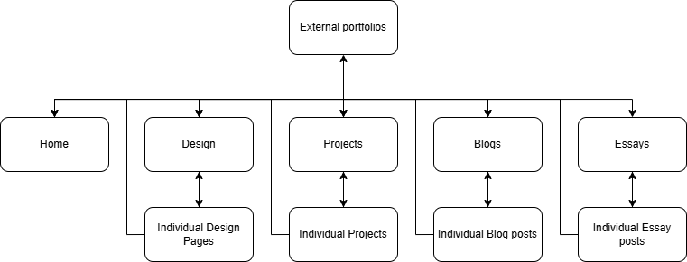

User experience
I want my website to clearly showcase the skills I have learned throughout the course of my degree. I think the best way to do this is to present all my projects with a name, short description, and a list of the most prominent skills used/learned in the project. Users can then click on the project to see it in depth, with a long description, multiple screenshots, and a download link. I want my users to be able to quickly see all of my skills at a glance and then be able to see each skill demonstrated in multiple projects. As such, they should have the ability to filter the project page by skill.
Intended audience
Primarily, my intended audience consists of potential clients, employers and recruiters. They would probably like to see a brief description of me, and then my past work and experience. Users could potentially be looking for experience with specific software or a specific skill.
Project portrayal
Projects should indicate the skills that went into making them. I believe this gives users a good idea of what kind of project they are browsing before they even know what the project is. This is especially important for me as the majority of my projects are more technically impressive than they are visually impressive. I need to “sell” the projects based on the challenging aspect that they achieved rather than the impressive art that went into them.
Intention behind writing
The Blog, Essay, and Design pages will supplement the projects page by providing extra insight into my personality and thought process as I design. This is important as users look at more than just technical experience and skill. A portfolio page should represent what sets me apart from other designers/developers, and that is who I am and how I think.
User Journey
It's important that the user journey is as simple as possible. Users should be able to backtrack to any main page from anywhere. Furthermore, to avoid users being overwhelmed with choices, specific pages like individual blogposts will only be accessible from the corresponding menu as users will likely look for such a page with intention.
